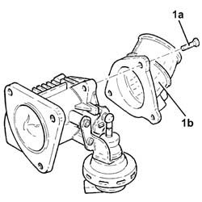

1060G52 ELECTRO-PNEUMATICALLY CONTROLLED THROTTLE CASING - REPLACEMENT
- Path
- Procedures > 10 ENGINE > 1060 DIESEL FUEL INJECTION > 1060G pressure pump electric control > 1060G52 ELECTRO-PNEUMATICALLY CONTROLLED THROTTLE CASING - REPLACEMENT
- Kind
- repair procedure (removal / refitting; the operation number is the code)
- Applies to
- engines: 1.9 JTD 8V, 1.9 JTD 16V; all production periods
- Interactive page
- https://sloeber94.github.io/elrnDB-a147/en/#/3025051
Applies to: engines: 1.9 JTD 8V; all production periods
 Removing
Removing
 Refitting
Refitting1016A10 sound-proofing cover - r + r
1060G50 Electro-pneumatically controlled THROTTLE CASING - R.R.
1. Undo bolts (1a) and separate fitting (1b) from the throttle body.
Remove the gasket.

Applies to: engines: 1.9 JTD 8V; all production periods
Refitting
RemovingFit the connector to its seat on the throttle body.
1060G50 Electro-pneumatically controlled THROTTLE CASING - R.R.
Applies to: engines: 1.9 JTD 16V; all production periods
Removing
RefittingProceed with removal 1016A10 sound-proofing cover - r + r .
Proceed with removal 1060G50 Electro-pneumatically controlled THROTTLE CASING - R.R. .
Applies to: engines: 1.9 JTD 16V; all production periods
Refitting
RemovingProceed with refitting 1060G50 Electro-pneumatically controlled THROTTLE CASING - R.R. .
Proceed with refitting 1016A10 sound-proofing cover - r + r .
Topics linked from this page (2)
- 1016A10 sound-proofing cover - r + r
- 1060G50 Electro-pneumatically controlled THROTTLE CASING - R.R.